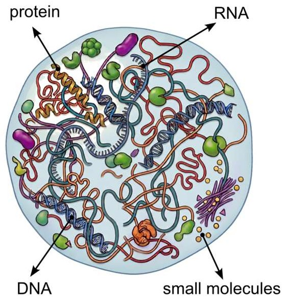
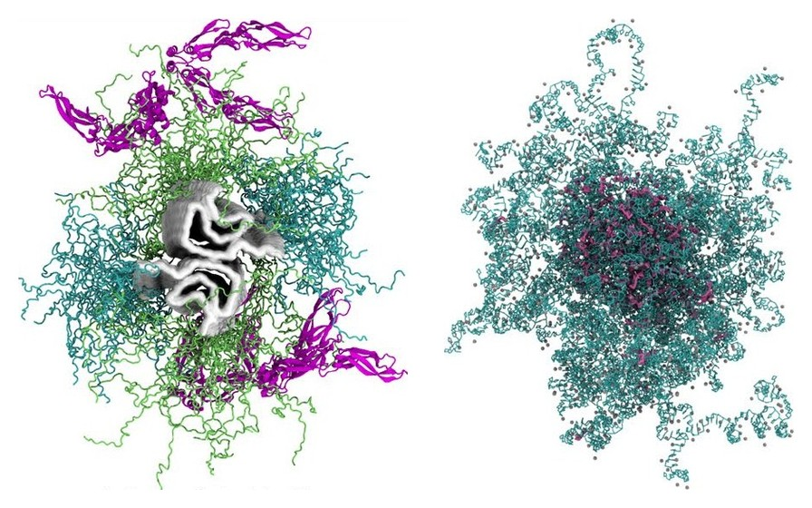
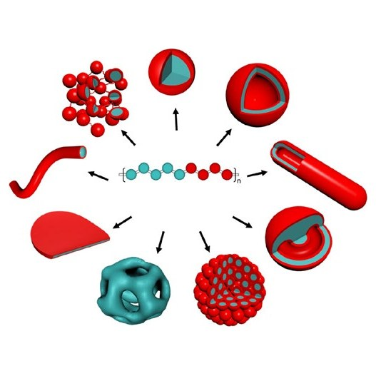
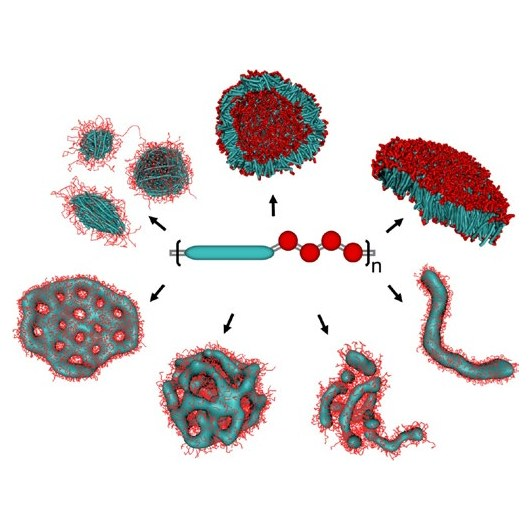
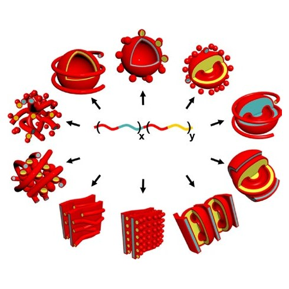
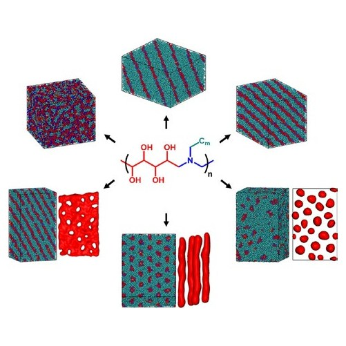
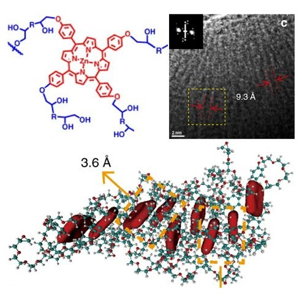
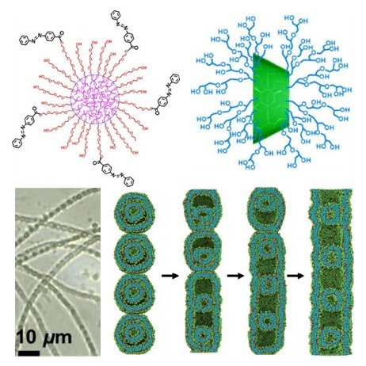
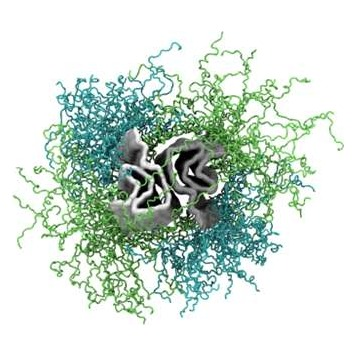
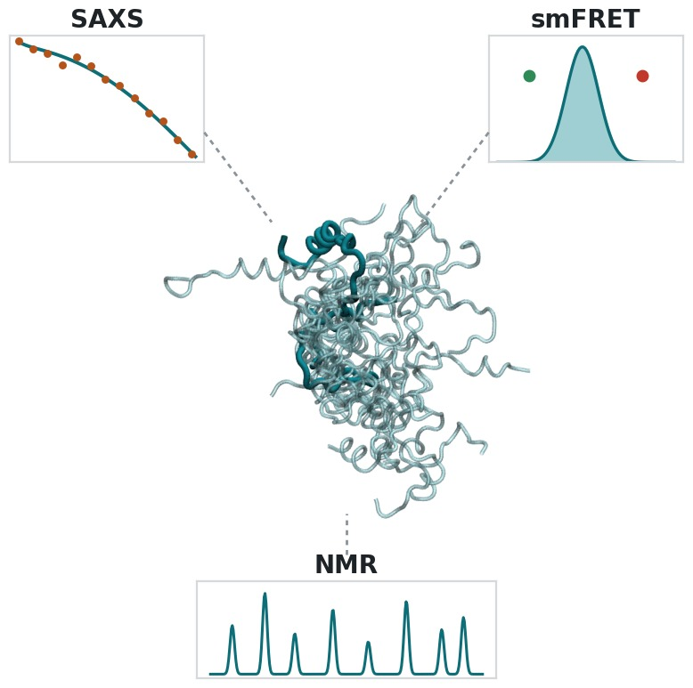

HyRes
Hybrid-resolution protein model that captures secondary structure and its coupling to phase separation, with GPU-accelerated simulation of dynamic proteins in complex environments.

Physics-based multiscale modeling of how biomolecules and polymers self-assemble, phase separate, and aggregate.
Postdoctoral Researcher, University of Massachusetts Amherst · with Prof. Jianhan Chen
Research
How molecules self-assemble, phase separate, and aggregate underlies both cellular function and the design of new materials. My research develops physics-based computational models that bridge molecular detail and mesoscale behavior, and uses them, together with experiments, to understand and predict these processes in living and synthetic systems.
All-atom simulations are accurate but slow, while simple coarse-grained models miss the molecular features that matter for biology. I develop intermediate-resolution models that close this gap, for proteins (HyRes), nucleic acids (iCon), and small molecules, and integrate them into one framework for simulating complex biomolecular mixtures at near-cellular scale. The models are calibrated against experiments and all-atom simulations, combined with machine learning, and shared as open-source tools.
Key work: JACS 2024 · PNAS 2025 · bioRxiv 2026

Biomolecular condensates organize the cell through phase separation, and their dysregulation is linked to diseases from neurodegeneration to cancer. I study how the sequence, structure, and interactions of proteins, nucleic acids, and small molecules determine how condensates form, what they contain, how they behave as materials, and how they age into pathological aggregates, with the long-term goal of guiding condensate-targeted therapeutics.
Key work: JACS 2024 · Biochem Soc Trans 2024 · PNAS 2025

Amyloid fibrils in neurodegenerative diseases have an ordered core surrounded by a disordered "fuzzy coat" that has long been hard to see in experiments. Using large-scale simulations, I study how fuzzy coats are organized and how they shape fibril stability, surface properties, and interactions with chaperones, membranes, and small molecules.
Related work: JACS Au 2026

Close collaboration with experimental labs runs through all of my work. Simulations provide molecular-level explanations of experimental observations and testable predictions, across biomolecular recognition, membrane interactions, and condensation in cells.
Related work: JACS Au 2026 · JACS Au 2026 · Biophys J 2026 · bioRxiv 2026 · Biomacromolecules 2024

The same physics governs synthetic materials. I use simulation to understand how polymer sequence and architecture control self-assembly and phase behavior, and to design new nanostructures for smart materials, working with experimental groups to test the predictions.
Simulation




With experimental labs




Models
All models are open source, with setup tools and tutorials on GitHub.
Hybrid-resolution protein model that captures secondary structure and its coupling to phase separation, with GPU-accelerated simulation of dynamic proteins in complex environments.
Intermediate-resolution RNA model with explicit Mg²⁺ that reveals the driving forces of RNA condensation, including base pairing and stacking.
Intermediate-resolution model of dynamic DNA structures and their phase separation, compatible with HyRes and iConRNA.
Proteins, nucleic acids, ions, and small molecules in one consistent intermediate-resolution framework, for simulating multicomponent condensates at near-cellular complexity.
Other tools: iConMapper (machine-learning atomistic-to-coarse-grained mapping) · SciKit (analysis and plotting toolkit) · all repositories →
Database
Large-scale simulation ensembles and curated experimental data, shared openly for analysis, benchmarking, and machine learning.
HyRes conformational ensembles for 29,872 disordered proteins and regions from the human proteome and DisProt, with trajectories, radius of gyration, end-to-end distance, secondary structure, and sequence properties for each. Also available as predicted entries in the Protein Ensemble Database (PED 2027).

HyRes-sampled fuzzy coats across known amyloid fibril structures, with surface properties, internal interactions, and binding properties of the disordered regions that flank the fibril core.

A curated collection of available experimental measurements on disordered proteins, including SAXS, smFRET, and NMR, for calibrating and benchmarking molecular models.

Publications
Recent advances in coarse-grained simulations of nucleic acid condensation
Biochemical Journal
Intermediate-resolution modeling of dynamic DNAs and their phase separation
bioRxiv (preprint)
Antibiotic condensates activate magnesium signaling to drive drug tolerance
bioRxiv (preprint)
Driving forces of RNA condensation revealed through coarse-grained modeling with explicit Mg²⁺
Proceedings of the National Academy of Sciences
Backbone interactions and secondary structures in phase separation of disordered proteins
Biochemical Society Transactions
Toward accurate simulation of coupling between protein secondary structure and phase separation
Journal of the American Chemical Society
Self‐Assembly of Peapod‐like Micrometer Tubes from a Planet‐Satellite‐type Supramolecular Megamer
Angewandte Chemie International Edition
Macromolecular Rapid Communications
Membrane‐Bound Inward‐Growth of Artificial Cytoskeletons and Their Selective Disassembly
Angewandte Chemie International Edition
Coarse-grained model of thiol–epoxy-based alternating copolymers in explicit solvents
The Journal of Physical Chemistry B
Computational design of Janus polymersomes with controllable fission from double emulsions
Physical Chemistry Chemical Physics
Physical Chemistry Chemical Physics
High-χ alternating copolymers for accessing sub-5 nm domains via simulations
Physical Chemistry Chemical Physics
Solution self-assembly behavior of rod-alt-coil alternating copolymers via simulations
Physical Chemistry Chemical Physics
Journal of Computational Chemistry
The Journal of Physical Chemistry B
Physical Chemistry Chemical Physics
Self‐assembly of amphiphilic alternating copolymers
Chemistry – A European Journal
Physical Chemistry Chemical Physics
Angewandte Chemie International Edition
Self-assembly and functionalization of alternating copolymer vesicles
Polymer Chemistry
Physical Chemistry Chemical Physics
Contact
Happy to talk about collaborations, using HyRes or iCon models, or anything related to biomolecular and polymer phase behavior.